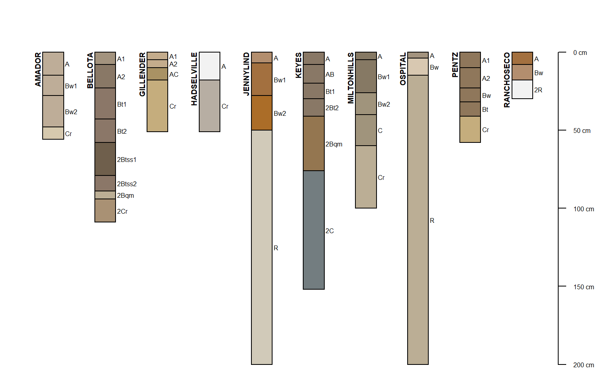

OSDquery.RdThis is a rough example of how chunks of text parsed from OSD records can be made search-able with the PostgreSQL fulltext indexing and query system (syntax details). Each search field (except for the "brief narrative" and MLRA) corresponds with a section header in an OSD. The results may not include every OSD due to formatting errors and typos. Results are scored based on the number of times search terms match words in associated sections. This is a programatic interface to this webpage.
OSDquery(mlra='', taxonomic_class='', typical_pedon='', brief_narrative='', ric='', use_and_veg='', competing_series='', geog_location='', geog_assoc_soils='')
| mlra | a comma-delimeted list of MLRA to search |
|---|---|
| taxonomic_class | search family level classification |
| typical_pedon | search typical pedon section |
| brief_narrative | search brief narrative |
| ric | search range in characteristics section |
| use_and_veg | search use and vegetation section |
| competing_series | search competing section |
| geog_location | search geographic setting section |
| geog_assoc_soils | search geographicaly associated soils section |
See this webpage for more information.
family level taxa are derived from SC database, not parsed OSD records
MLRA are derived via spatial intersection (SSURGO x MLRA polygons)
MLRA-filtering is only possible for series used in the current SSURGO snapshot (component name)
logical AND: &
logical OR: |
wildcard, e.g. rhy-something rhy:*
search terms with spaces need doubled single quotes: ''san joaquin''
combine search terms into a single expression: (grano:* | granite)
a data.frame object containing soil series names that match patterns supplied as arguments.
http://www.nrcs.usda.gov/wps/portal/nrcs/detailfull/soils/home/?cid=nrcs142p2_053587
SoilWeb maintains a snapshot of the Official Series Description data.
# \donttest{ if(require(aqp)) { # find all series that list Pardee as a geographically associated soil. s <- OSDquery(geog_assoc_soils = 'pardee') # get data for these series x <- fetchOSD(s$series, extended = TRUE, colorState = 'dry') # simple figure par(mar=c(0,0,1,1)) plot(x$SPC) }#># }